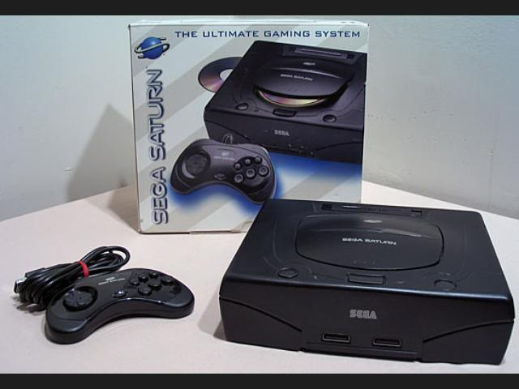

<
Era una máquina muy potente capaz de mostrar buenos
juegos tanto en 2D como en 3D. Fue inicialmente diseñada
para albergar una única CPU, pero en las últimas fases
del diseño se añadió una segunda, haciendo que las piezas
no trabajaran de una forma natural entre sí, y provocando
que programar juegos para ella fuera toda una odisea. La sombra
de la PlayStation de Sony hizo que Sega lanzara su consola antes
de tiempo, dando la situación de una máquina sin apenas juegos.
Finalmente salió PlayStation al mercado y superó rápidamente en
ventas a la Saturn en Occidente, dejándola fuera del mercado.
Únicamente siguió teniendo éxito en Japón por unos cuantos años más.
Destacaron juegos como Virtua Fighter 2, Sega Rally o
Panzer Dragoon Saga.
>
